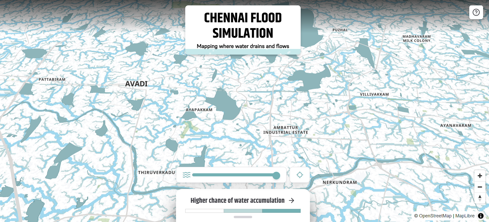
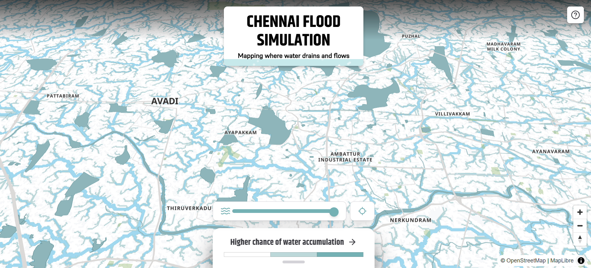

Geospatial Simulation Software
Advanced Terrain & Climate Modeling
Harness the power of advanced Geospatial Intelligence with our cutting-edge land surface simulation technology. We develop high-performance software solutions that analyze satellite imagery, topographical data, and environmental variables to deliver real-time terrain modeling, predictive analytics, and decision support systems.
Our tools enable governments, environmental agencies, and private organizations to simulate climate impact, manage land use efficiently, and optimize resource allocation through data-driven insights and AI-based geospatial modeling.
Key Software Capabilities
Satellite & Aerial Data
Integrate multi-source satellite and drone imagery for precision mapping and monitoring.
Dynamic Terrain Modeling
Real-time terrain and land surface simulation for predictive flood and disaster management.
Hydrological & Climate Analysis
AI-driven simulation of water flow, rainfall, and climate impact across urban and rural regions.
AI & Predictive Analytics
Forecast environmental risks and optimize resource allocation using machine learning algorithms.
Core Capabilities
Simulation Visualizations

 

Real-World Applications
Urban Planning
Optimize infrastructure development, flood control, and land use planning with predictive models.
Environmental Management
Simulate climate change effects and natural resource allocation for sustainable planning.
Enterprise Risk Analysis
Assess flood, drought, and disaster risk for industrial and agricultural sectors.